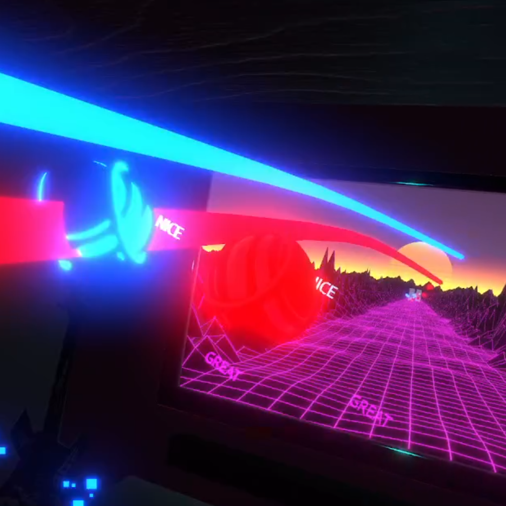
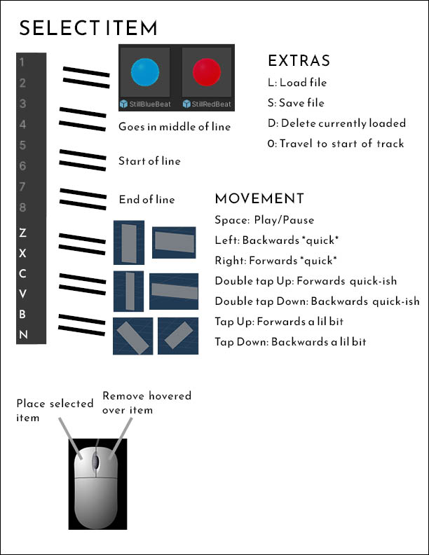
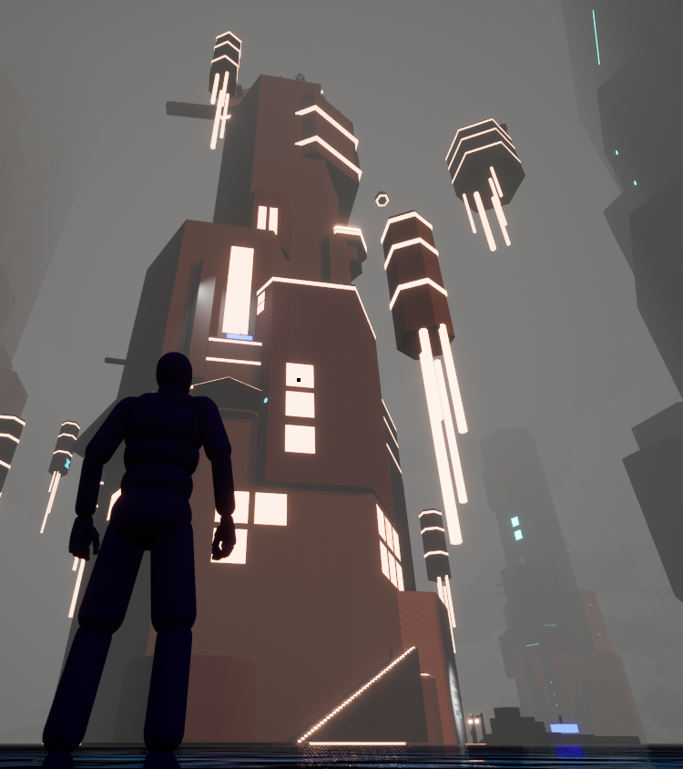

Project Overview
Rhythm Adventure was part of a wider focus on development in virtual reality, figuring out ways to make the player move, almost as exercise.
The imitation of Synth Riders was definitely the easiest part of it. I was inspired by their mixed reality setup, and did my best to make a juicy replica solely in VR.
My main focus was the level builder, and I spent most of my time working out how to best structure it to be the most usable.
Level Builder
I forgor :D


Achievements
The three things I'm most proud of in this project are the sightlines, lighting and mechanical progression.
Sightlines: These guides the player up the tower, giving them their first and only major goal, reaching the top.
Lighting: Guides players through each minor section, acting similarly to yellow paint, though far more discreet.
Mechanical progression: Teaches the player how to use mechanics not commonly found in any other level, to the point
where the player can complete a gauntlet of jumps before reaching the end of the level.
Inspirations
Both BLAME ! and Vivarium were two huge aesthetical inspirations for this project, inspiring the repetitive enormous structures of this world.
Cyberpunk 2077 and Celeste were the other two inspirations, with the lighting and unfriendliness of the first, while taking inspiration from the gameplay of the latter.